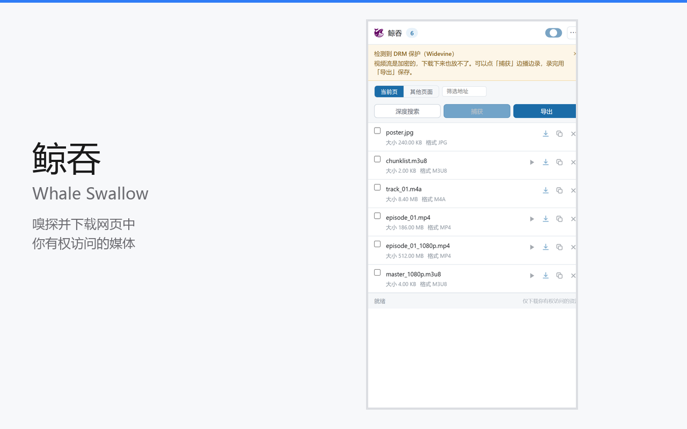
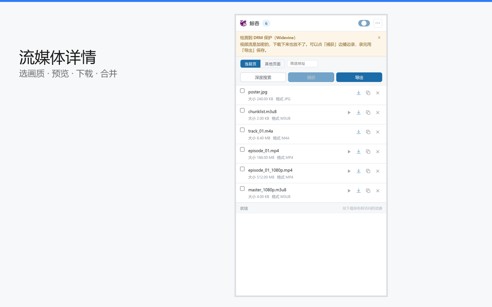
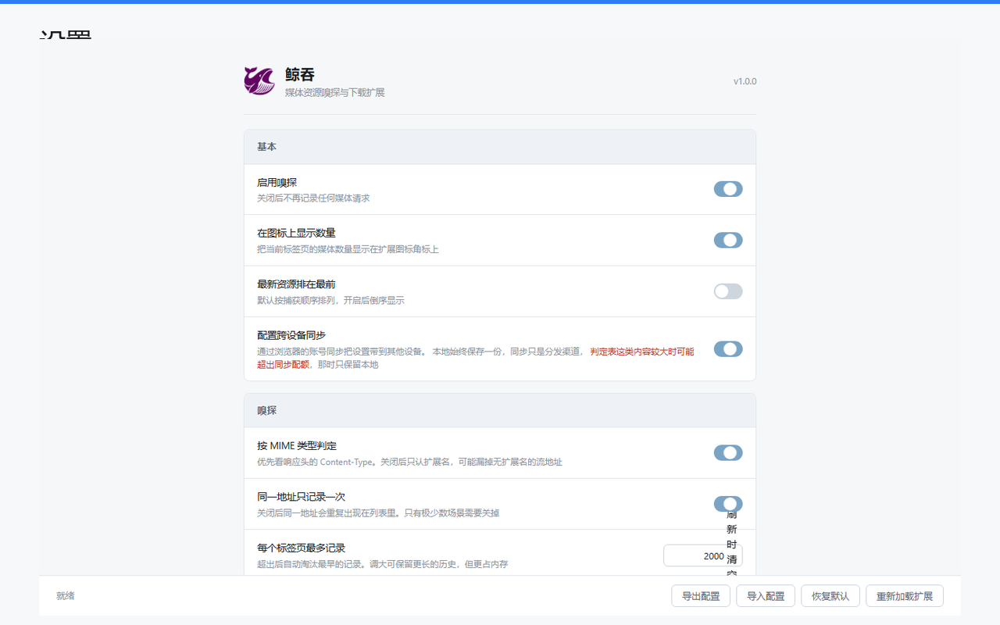

识别资源
自动列出页面加载的音视频地址（m3u8、mpd、mp4、m4a 等），并归类到对应标签页。
识别网页中你有权访问的音视频，本地下载、解密、合并与转封装。
全程不联网，不上传，不收集数据。
Chrome 111+ / Edge 111+ · 加载已解压的扩展程序即可使用
一个扩展，覆盖从识别到成片的全流程。
自动列出页面加载的音视频地址（m3u8、mpd、mp4、m4a 等），并归类到对应标签页。
1–16 路并发、慢启动与限流感知，速度、剩余时间与进度实时显示。
自动解密 HLS 加密分片；密钥按 URI 缓存，并发请求自动去重。
已下载分片写入浏览器私有文件系统，中断后重跑只补缺失部分。
跟随无结束标记的直播清单边收边下，随时停止，丢失的分片会明确报告。
内置 FFmpeg（WebAssembly）把 TS 转成 MP4、合并音视频双轨，无需联网。
弹窗、详情面板与设置页。



无需构建，无需账号。
从 Releases 下载最新的 .zip，解压到任意目录。
地址栏输入 chrome://extensions/（Edge 为 edge://extensions/），打开右上角「开发者模式」。
点击「加载已解压的扩展程序」，选择解压后的目录（含 manifest.json 的那一层）。
打开任意视频页播放几秒，点工具栏的扩展图标，资源就会出现在列表里。
需要 Chrome 111 或更高版本；Edge 及其他 Chromium 浏览器同样可用。
这是本项目的底线，不是营销话术。
无统计、无广告、无遥测，不向开发者或任何第三方服务器传输数据。所有处理在本机完成。
不申请 cookies、history、bookmarks 等与功能无关的权限。
检测到 Widevine / PlayReady 等 DRM 时会提示无法下载，不提供任何绕过手段。
使用者应自行确保行为符合当地法律与目标网站服务条款。项目不提供 DRM 绕过。
详见 PRIVACY.md · NOTICE.md · 第三方许可证